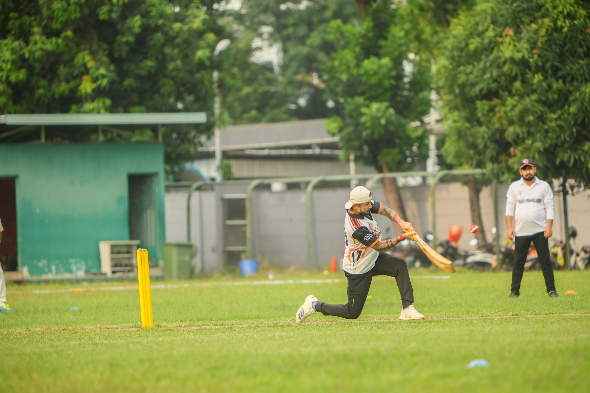
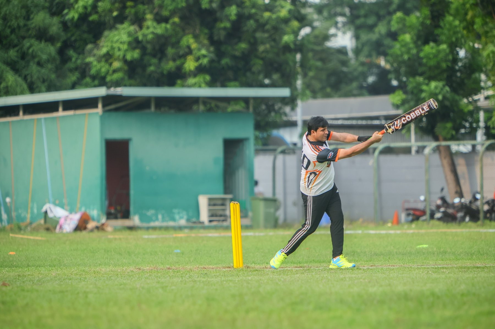
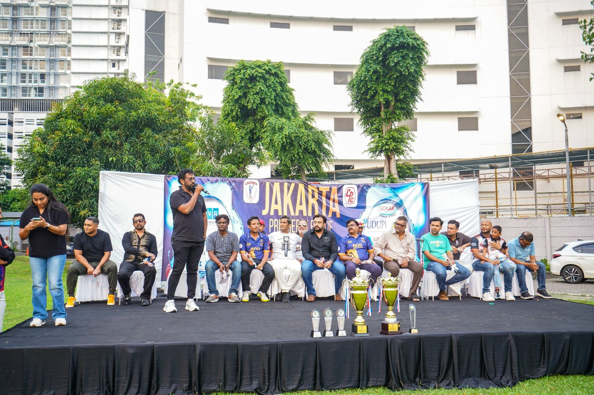
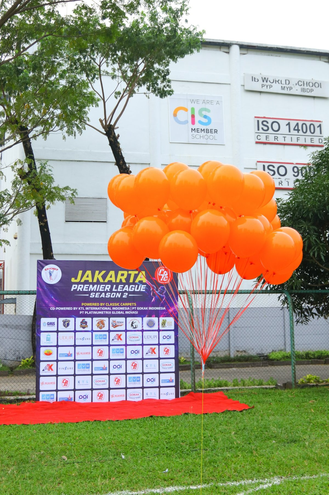
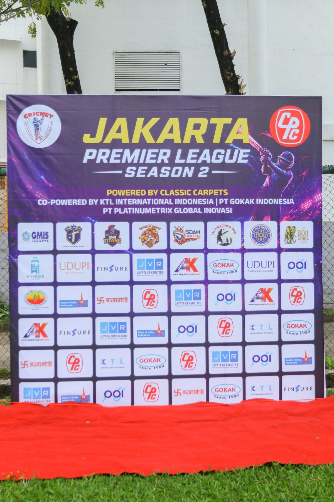
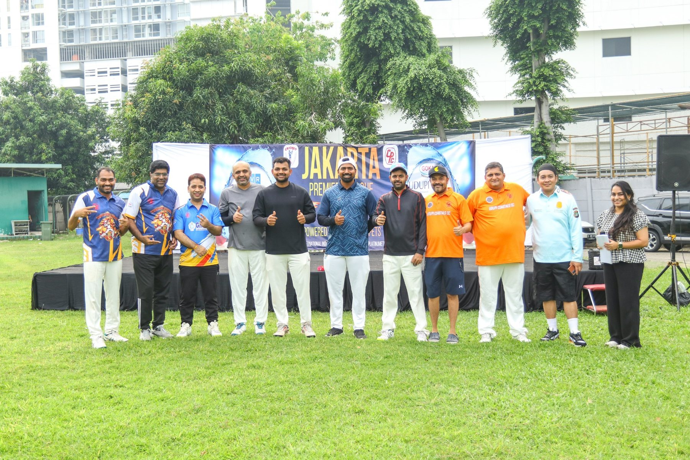

01 / COMPETE
Tennis-ball cricket
Fast-paced matches, competitive teams and exciting moments that celebrate the spirit of tennis-ball cricket.
Welcome to Jakarta Premier League — a platform connecting the cricket community in Indonesia through the excitement of tennis-ball cricket tournaments, teamwork and unforgettable moments.

Jakarta Premier League brings cricket players, teams, families and supporters together through the shared love of the game. Built around the spirit of tennis-ball cricket, JPL creates a place to compete, connect, celebrate talent and make lasting memories.
From exciting matches to team celebrations and community gatherings, every season adds a new chapter to the cricket story in Indonesia.
A league experience that brings people together on and beyond the cricket field.
Fast-paced matches, competitive teams and exciting moments that celebrate the spirit of tennis-ball cricket.
Bringing players, families, supporters and cricket enthusiasts together from across Indonesia.
Recognising performances, teamwork, sportsmanship and the memories created every season.
The action, the teams, the celebrations and the people who make the league special.




Explore the tournaments, teams and memories that continue to shape Jakarta Premier League.

Discover the beginning of the Jakarta Premier League journey.
EXPLORE SEASONS →
Relive the tournament, match results, teams and standout performances.
VIEW SEASON 2 →
Stay connected for upcoming season announcements and updates.
FOLLOW THE JOURNEY →Celebrating tennis-ball cricket and growing the game together in Indonesia.